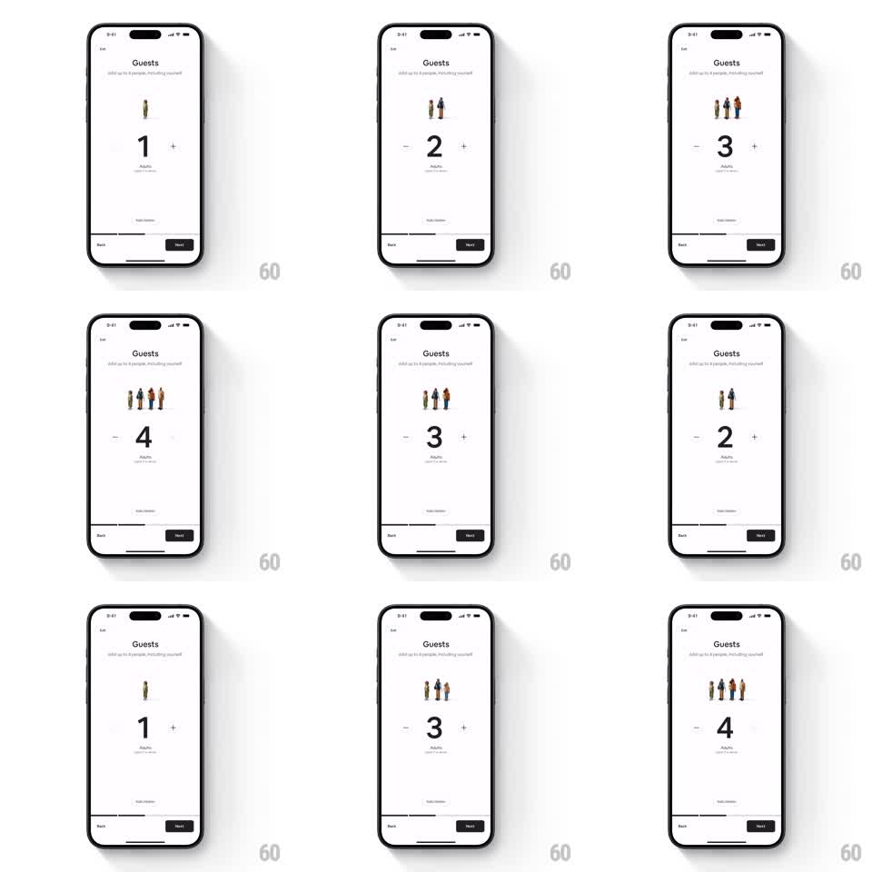

Media
Frame-by-frame

Rebuild this interaction 1:1: Airbnb's guest picker - a giant stepper count where a row of 3D clay characters springs in or out one by one as guests are added or removed.

Rebuild this interaction 1:1: Airbnb's guest picker - a giant stepper count where a row of 3D clay characters springs in or out one by one as guests are added or removed.
## Integration
Integration: stack-agnostic spec - springs given as stiffness/damping, timed motions as duration + curve; map every value to your framework and animation library of choice.
## Scene
White "Guests" sheet ("Add up to 6 people, including yourself"). Center stage: a lineup of small 3D clay people above an oversized count numeral flanked by circular - and + steppers. Category label (Adults) under the count, Back/Next bar at the bottom.
## Motion spec
Pattern: per-unit character pop stepper.
- Tap +: the count numeral rolls up one digit (vertical roll, 200ms, ease-out) and a new clay character springs into the lineup from below (translateY 24px to 0, scale 0.5 to 1, spring ~420/20 with a cheerful overshoot), the existing characters shuffling aside to make room (spring ~380/26).
- Tap -: the rightmost character crouches and drops out (scale to 0.7, translateY down 20px, fade, 250ms, ease-in) while the rest close ranks; the numeral rolls down.
- Characters are varied (different outfits/skin tones) and land in a fixed per-index order - the same guest always looks the same.
- Steppers: disabled state at min/max fades to 30% opacity; tap gives a radial press dip (scale 0.9, 120ms spring back).
- The characters idle with a subtle sway (+-2deg rotation, phase-offset 3s loops) after any change settles.
## Calibration
- The character pop is the reward - full spring overshoot; the numeral roll is secondary and faster.
- Lineup recenters after each change so the group stays balanced over the numeral.
## Reduced motion
Characters fade in place; numeral crossfades.
## Don't miss
- Characters spring from below with squash on landing - flat fades kill the playfulness.
- The count and the lineup always match; no frame shows 3 people under a "4".